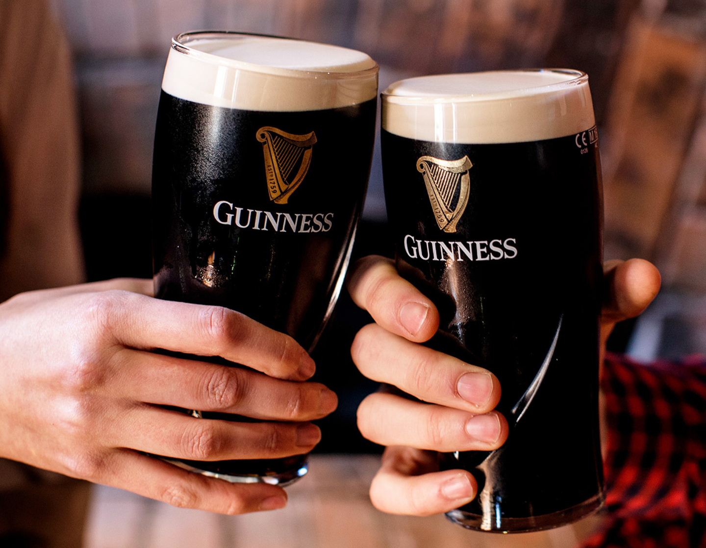

Irish food, traditionally rooted in simplicity and local ingredients, reflects the agricultural history, climate, and evolving tastes of the Irish people. Historically, Irish cuisine centered around dairy, grains, root vegetables, and meat—particularly beef, lamb, and pork. The potato, introduced in the late 16th century, became a staple due to its hardiness and nutritional value. It remains a cornerstone of Irish dishes today, appearing in classics like Irish Stew, Shepherds Pie and Coddle. The reliance on potatoes shaped Ireland's food economy and cultural identity, though it also contributed to tragedy during the Great Famine of the 1840s, which fundamentally altered Irish society. Despite this history, Irish cuisine developed a range of distinctive dishes that highlight the natural flavors of local produce. Irish stew, for example, is one of the most traditional meals, made with lamb or beef, potatoes, carrots, onions, and sometimes barley. It is a hearty, warming dish suited to the Irish climate. Soda bread, made with baking soda instead of yeast, is another staple. Each household often has its own variation, with some adding currants, oats, seeds, or buttermilk to create unique flavors. Seafood also plays a crucial role, especially in coastal regions where fish like salmon, cod, and mackerel are common. A full Irish breakfast is also very common at Irish Cafes or home cooked for berakfast, being served with both wihte and black pudding compared to the similar full english.
Irish Food
Food

Beverages
Beverages also hold cultural significance. Tea has long been a central part of Irish hospitality, often served with biscuits or homemade bread. Guinness, the famous Irish stout, is perhaps the most iconic drink exported worldwide. With its distinctive dark appearance and creamy head, Guinness has become synonymous with Irish identity. Ireland is also known for its whiskey tradition, with distilleries producing smooth, triple-distilled varieties that differ from Scotch or American whiskey.
